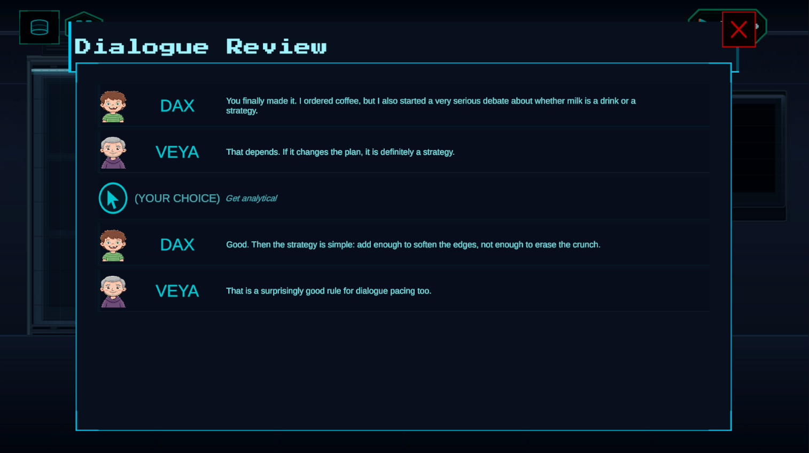
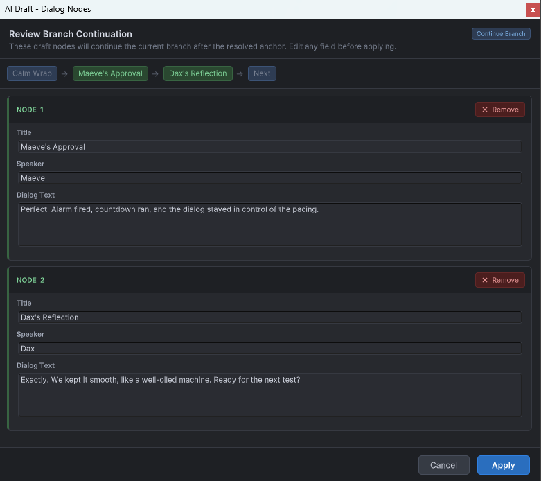

History and Transcripts
This module covers the player-facing backlog view and the exact branch transcript reconstruction added for deterministic review.
DialogueHistory
DialogueHistory subscribes to DialogManager events such as OnLineShown, OnChoicePicked, and OnConversationReset. It records lightweight history entries and updates DialogueHistoryView when the panel is open.
Transcript builder
DialogGraphTranscriptBuilder rebuilds a transcript directly from the DialogGraph and the stored branch path, traversing the graph deterministically in SpecificBranchPath mode.
string transcript = DialogManager.Instance.GetLastPlayedDialogTranscript("intro_guard");
Debug.Log(transcript);Guard: Halt. State your business.
Your Choice: I am here to help.
Guard: Then you may enter.Best practices
- use
DialogueHistoryfor UI display - use transcript reconstruction for exact branch reporting or debugging
History panel

Best visual for this page.
Branch reconstruction

Inspecting how a transcript rebuilds the exact played branch from recorded choice indices.